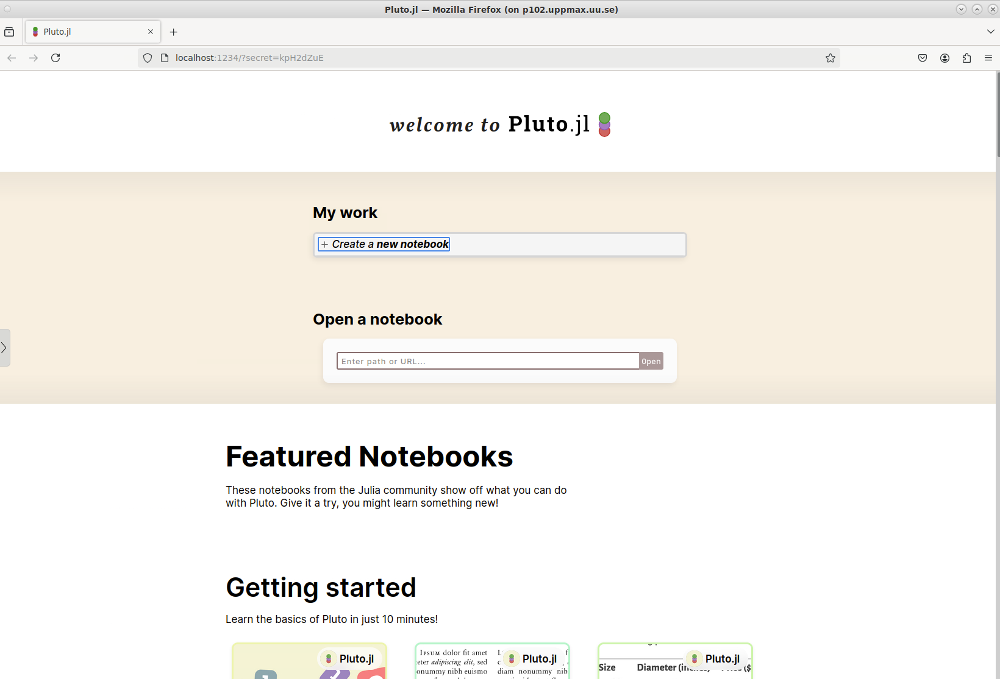

A Julia notebook: Pluto¶
Activate the Pluto environment we installed earlier¶
Start Pluto¶
First try:¶
- At some places it actually starts a web browser
Otherwise, do¶
and note the url given and paste it into a browser opened from the menu of ThinLinc.
Otherwise, do¶
- Note the url given and paste it into a browser opened from the menu of ThinLinc.
- also note the node you got when starting the interactive session (like
n701or similar on Tetralith). - change
0.0.0.0to that hostname - Example for Tetralith to be in web browser url:
http://n701:1234/?secret=mAzEDw9R
How does it look like?¶

- Welcome page

- Pluto cells